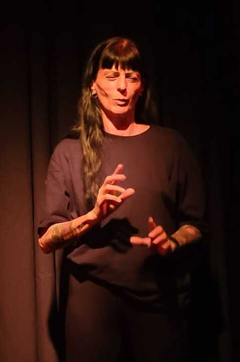

Olá! Sou Roberta E. Costa Interprete De Libras
Intérprete de Libras com profunda expertise em facilitar a comunicação inclusiva e acessível. Comprometida em quebrar barreiras através da Língua de Sinais, promovendo a igualdade e a compreensão entre pessoas surdas e ouvintes.
Saiba Mais!
